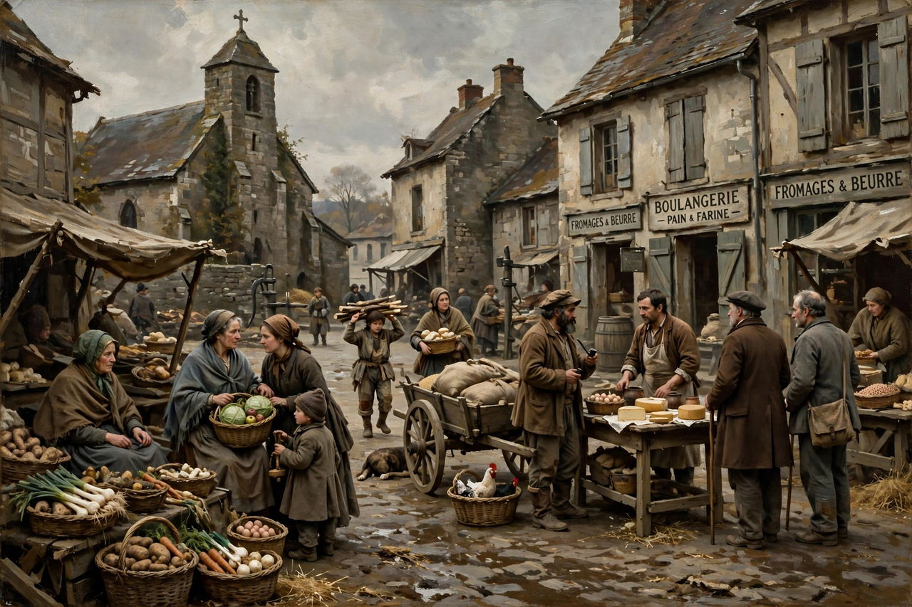

| Period | c. 1830s – early 1900s |
|---|---|
| Precursors | Enlightenment novel, Romanticism (as reaction) |
| Key figures | Balzac, Flaubert, Eliot, Tolstoy, Dostoevsky, Howells |
| Related | Naturalism, verismo, socialist realism |
Literary realism is a movement in literature that attempts to represent familiar things as they are, depicting everyday experiences and activities — typically of ordinary, often middle- or lower-class characters — without idealisation, romantic embellishment, or supernatural elements. It emerged in mid-19th-century France in reaction against Romanticism and became the dominant mode of the European and American novel.
Realist writers sought fidelity to observed life: detailed description of milieu, plausible motivation, and the influence of social environment on character. Honoré de Balzac's vast La Comédie humaine mapped French society across classes; Gustave Flaubert's Madame Bovary (1857), prosecuted for obscenity on its appearance, became a byword for stylistic precision and impersonal narration. The critic Champfleury and the painter Courbet gave the movement its name and manifesto in the 1850s.
In England, George Eliot's Middlemarch (1871–72) anatomised provincial life, while Dickens combined realism with caricature and melodrama. In Russia, realism reached exceptional psychological depth in Gogol, Turgenev, Dostoevsky, and Tolstoy. In the United States, William Dean Howells championed realism in the work of Mark Twain and Henry James; the harsher offshoot of naturalism — in Zola, Dreiser, and Norris — stressed heredity and environment as determining forces.
Realism's techniques — free indirect discourse, circumstantial detail, omniscient social panorama — became the default grammar of the modern novel and persist in contemporary fiction, film, and television drama, even after modernism challenged its premises.
From Wikipedia, the free encyclopedia. Recreated article.